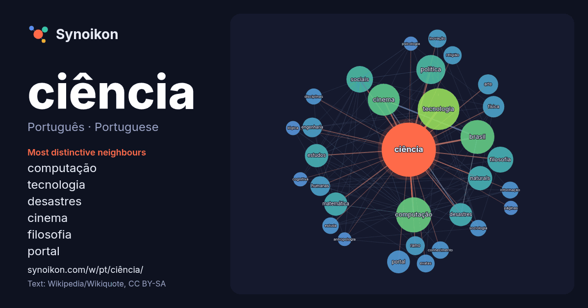

Português · Portuguese · popular word
ciência
“science” · The words found around it in 1383 instances from Portuguese Wikipedia, Wikiquote.

Most distinctive neighbours
- computação 75×
- tecnologia 71×
- desastres 37×
- cinema 35×
- filosofia 32×
- portal 31×
- sociais 29×
- naturais 28×
- matemática 27×
- inovação 22×
- exatas 21×
- engenharia 20×
- física 20×
- estuda 19×
- política 19×
- sociologia 18×
- humanas 18×
- religião 17×
- ramo 17×
- disciplinas 16×
× = how many times more often than in general Portuguese Wikipedia text.
Most frequent neighbours
- tecnologia 121
- computação 86
- brasil 80
- cinema 71
- política 59
- sociais 49
- filosofia 47
- história 41
- naturais 41
- estudos 38
- matemática 38
- desastres 37
- portal 36
- física 32
- campo 30
- arte 28
- engenharia 27
- humanas 27
- cultura 25
- ramo 25
In context
- previsões testáveis sobre o mundo. A ciência moderna é normalmente dividida em três ramos principais: as ciências naturais (por exemplo, física, química Wikipedia snippets · Ciência
- da casa") (também chamada de ciência económica (português europeu) ou ciência econômica (português brasileiro)) é a ciência que consiste na análise da produção Wikipedia snippets · Economia
- e interconexão. Existe no interior da ciência política uma discussão acerca do objeto de estudo desta ciência, que, para alguns, é o Estado e, para outros Wikipedia snippets · Ciência política
- naturais. Dada a natureza dual da ciência como um conhecimento objetivo e como uma construção humana, a historiografia da ciência usa métodos históricos tanto Wikipedia snippets · História da ciência
- esta ciência descreve a natureza por meio de modelos científicos. É considerada a ciência fundamental, sinônimo de ciência natural: as ciências naturais Wikipedia snippets · Física
- ramificação da Ciência da Computação, veja Teoria da computação. Se procura o termo geral, veja Computação. Ciência da computação é a ciência que estuda as Wikipedia snippets · Ciência da computação
- métodos, interpretações e aplicações. A ciência indígena é a aplicação e interseção do conhecimento indígena e da ciência. Em ecologia, isso às vezes é chamado Wikipedia snippets · Ciência indígena
- formulação e implementação da Política Nacional de Ciência e Tecnologia. Foi criado como Ministério da Ciência e Tecnologia (MCT) durante o governo José Sarney Wikipedia snippets · Ministério da Ciência, Tecnologia e Inovação
More Portuguese words
- arte
- clima
- comida
- coração
- cão
- deus
- dinheiro
- família
- força
- gato
- história
- língua
- morte
- natureza
- ouro
- ponte
- saúde
- trabalho
- trem
- verdade
- vida
- água
Precomputed on 2026-10-09 with default settings (±5 words, medium corpus). The interactive map can refresh it with live data.